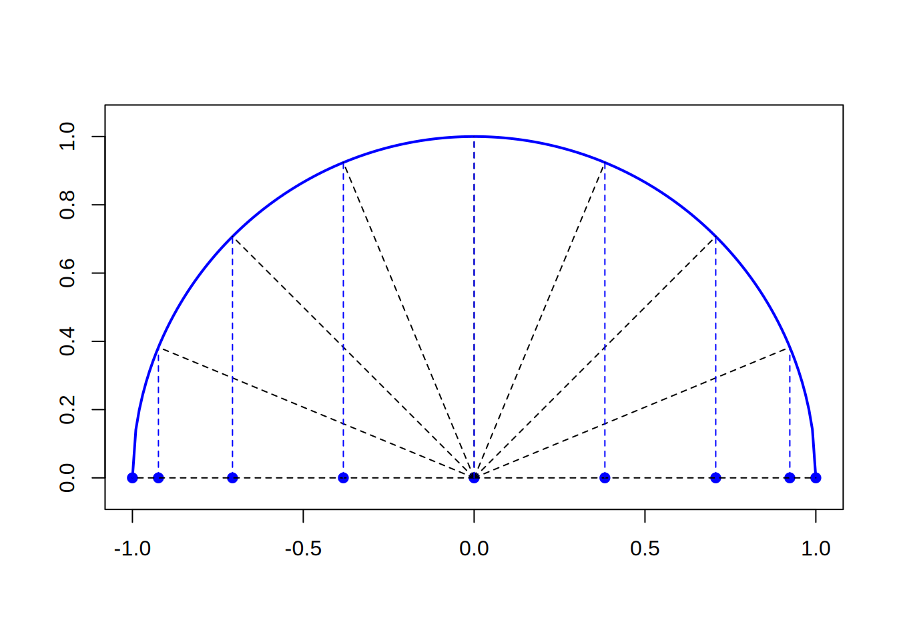

Files for the present tutorial can be found using following links:
Today, we will deal with the issue of interpolation. Suppose that from a tank that can be placed at different heights, water flows out of the pipe until it is empty. We made the experiment by placing the tank at several different heights (eg 2, 3 and 4 m) and for each of these heights we measured the time after which the tank was empty. Note, the pipe remains on the same level. In the design process (optimization?), we usually want to be able to predict the emptying time for any tank placement height. This height is between the set extreme values, i.e. at an altitude of 3.27 m. Therefore, we must be able to use our measurement data to carry out a curve that will reliably approximate this relationship. We are talking about interpolation, i.e. interpolating a set of discrete data (interpolation nodes) into a continuous relationship defined for each argument lying between the points (interpolation nodes) on which we base interpolation.
Interpolation is the issue of leading a curve through all points from the data set so as to obtain the course of the assumed dependence between the measurement points. The number of degrees of freedom of the fitted curve must be equal to the number of points in the data set (the number of equations must be equal to the number of unknowns).
Let us condider a Lagrange polynomial interpolation, where interpolation polynomial reads: \[ w(x) = \sum_{i=0}^{n} y_i \prod_{j=0 \land j\neq i}^{n} \frac{x - x_j}{x_i - x_j} \] and \((x_i, y_i)\) denotes single measurement point (interpolation node).
malloc function for dynamic mememory allocation of a 1D array:double *x;
x = (double *) malloc(n * sizeof(double));
if (x == NULL) {
fprintf(stderr, "malloc: can not allocate x.\n");
exit(1);
}
/* free memory x */
free(x);Using function lagrange(double *x, double *y, int n, double xx) compute the value of the interpolation polynomial in the arbitrary point xx located in between the interpolation nodes. An example of basic usage of lagrange function is given below:
int main() {
double x[3] = {0, 1, 2};
double y[3] = {0, 1, 4};
double f, t = 1.5
/* Wyznacz wartosc paraboli dla t = 1.5 */
f = lagrange(x, y, 3, t);
}scale(double x0, double y0, double x1, double y1) definedd in winbgi2 library. Experiment with different x0,y0,x1,y1 parameters. An example below shows how to apply this function to display sin(x) function.int main() {
double pi = 4. * atan(1.);
graphics(600, 400);
scale(0, -1.2, 7, 1.2); // xmin = 0, ymin = -1.2, x_max = 7, ymax = 1.2
double x = 0;
while(x < 2 * pi) {
point(x, sin(x));
x += 0.01;
}
wait();
}lagrange(double *x, double *y, int n, double xx) denote:x, y - pointers to n-element arrays holding coordinates of the interpolation nodes,n - the size of the vector (number of its elements),xx - current value of the interpolating polynomial argument for which we compute the value of the Lagrange polynomial. ## 3. Runge effect Let us check how to improve quality of the interpolation by introduction of a more clever interpolation nodes distribution. We will use function \(|x|\) in this example.Up to now, interpolation nodes were distributed uniformly in the interpolation domain. Let us now to choose this distribution in such a way that they are denser close to the ends of the interpolation domain. This can be done as follows (see Lecture nodes for theoretical explenation).
We want to distribute interpolation nodes in the range \(x = [-1, 1]\).
Now let us plot half-circle with center in the middle of this range \(x = 0\) and radius \(R = 1\). The uniform division of an resulting arc (measuring in local arc coordinate) on \(n - 1\) fragments allows to generate abscisas of the interpolation nodes given be the formula: \[ x_i = -\cos\left( \frac{i \cdot \pi}{n-1} \right), \; i = 0, \ldots n - 1 \] In more general case of the range \(x = [a, b]\) the following formula is valid: \[ x_i = -\frac{b-a}{2} \cos\left( \frac{i \cdot \pi}{n-1} \right) + \frac{a+b}{2}, \; i = 0, \ldots n - 1 \]  ### Exercise Modify your program in such a way, that interpolation nodes are generated according to the above defined formula, i.e., Chebyschev interpolation nodes. Check how interpolation errors change when functions: \(|x|\) or \(1/(1+10x^2)\) are used to generate interpolation nodes. Can you see a difference ?